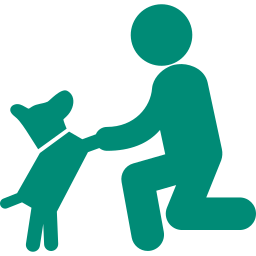
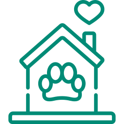
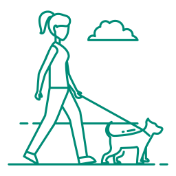

ENCONTRE SEU FUTURO AMIGO AQUI

Cachorro
"O cachorro é aquele tipo de animal revestido mais de alma do que pelos" - Lais Lemma.Procurar


MOTIVOS PARA ADOTAR UM PET

Companhia
Um pet pode ser uma ótima companhia nos bons momentos.

Um lar mais alegre
Os pets enchem o lar de vida. É claro que eles aprontam, mas também nos entretêm muito..png)
Autoconfiança
Eles podem ser ótimos ouvintes e oferecem amor incondicional, sem espaço para julgamento.
